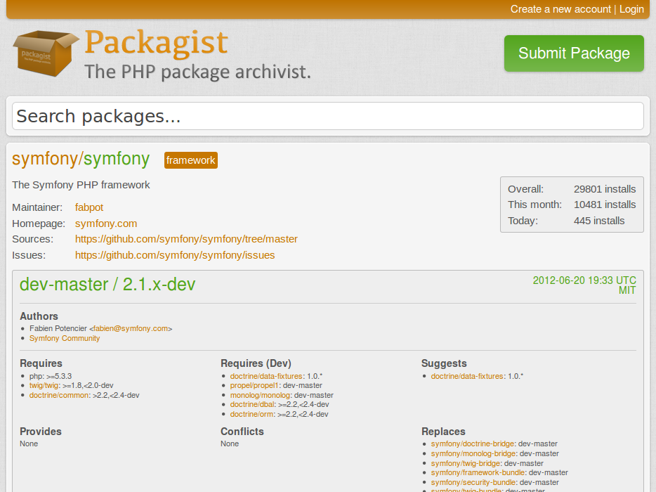

Composer
Zarządzanie zależnościami w PHP
Michał Pipa
21 czerwca 2012
Michał Pipa
21 czerwca 2012
Frankly, the PEAR packages are more or less obsolete as we now have Composer. Installing Symfony or any other framework for that matter globally on a system does not make much sense.
$ curl -s http://getcomposer.org/installer | php $ sudo mv composer.phar /usr/local/bin/composer
$ composer.phar self-update
composer.json
{
"require": {
"monolog/monolog": "1.0.*"
}
}
$ composer.phar install
Installing dependencies
- Installing monolog/monolog (1.0.2)
Downloading: 100%
Writing lock file
Generating autoload files
$ git clone git://github.com/symfony/symfony-standard.git $ cd symfony-standard $ composer.phar install
Installing dependencies from lock file
- Installing doctrine/common (2.2.2)
Downloading: 100%
[...]
symfony/symfony suggests installing doctrine/data-fixtures (1.0.*)
[...]
Generating autoload files
Clearing the cache for the dev environment with debug true
Installing assets using the hard copy option
Installing assets for Acme\DemoBundle into web/bundles/acmedemo
[...]
vendor/composer.lockvendor/autoload.php)composer.json)install w pierwszej kolejności sprawdza wersję biblioteki w composer.lock, jeżeli on istniejecomposer.lock nie istnieje, to wtedy sprawdzany jest composer.json i tworzony composer.lockupdate aktualizuje biblioteki do najnowszej wersji pasującej do composer.json i zapisuje te wersje w composer.lock{
"hash": "e4e3109acc8a04877ee974efb7478127",
"packages": [
{
"package": "monolog/monolog",
"version": "1.0.2"
}
],
"packages-dev": null,
"aliases": [
],
"minimum-stability": "dev",
"stability-flags": [
]
}
require 'vendor/autoload.php';
Przykład użycia Monologa:
$log = new Monolog\Logger('name');
$log->pushHandler(new Monolog\Handler\StreamHandler('app.log',
Monolog\Logger::WARNING));
$log->addWarning('Foo');
Jest to mapowanie nazwy klasy (razem z przestrzenią nazw) na ścieżkę do pliku z definicją tej klasy, aby ją następnie załadować.
\Doctrine\Common\IsolatedClassLoader =>/path/to/project/lib/vendor/Doctrine/Common/IsolatedClassLoader.php \Symfony\Core\Request => /path/to/project/lib/vendor/Symfony/Core/Request.php \Zend\Acl => /path/to/project/lib/vendor/Zend/Acl.php \Zend\Mail\Message => /path/to/project/lib/vendor/Zend/Mail/Message.php \namespace\package\Class_Name => /path/to/project/lib/vendor/namespace/package/Class/Name.php \namespace\package_name\Class_Name => /path/to/project/lib/vendor/namespace/package_name/Class/Name.php
Implementacja: ClassLoader (komponent Symfony)


$ composer.phar create-project composer/satis